L5SORECOSemestre 5 · 2026/2027

Représentation des connaissances
pour les SHS
Juan Luis (Gianni) Gastaldi
Cours 1
Introduction
14/09/2026
Présentations personnelles
Enseignant: Gianni Gastaldi
Étudiant·es
- Nom d’usage/pronoms
- Parcours
- Discipline principale/préférée
- Compétences informatiques
- Connaissances en logique/mathématiques
- Connaissances en philosophie
Page web du cours
Qu’est-ce que la
représentation des connaissances?
“Représentation des connaissances”?
Textes pédagogiques de référence
Représentation de connaissances: Définitions
Brachman and Levesque (2004)
One striking aspect of intelligent behavior is that it is clearly conditioned by knowledge.
One definition of Artificial Intelligence (AI) is that it is the study of intelligent behavior achieved through computational means.
Knowledge representation and reasoning, then, is that part of AI that is concerned with how an agent uses what it knows in deciding what to do. It is the study of thinking as a computational process.
Trois notions clés
Brachman and Levesque (2004)
Connaissance
↓
Représentation
↓
Raisonnement
Connaissance et propositions
“Jeanne sait que…
… Paris est la capitale de la France.”
… une heure dure soixante minutes.”
… un chat est un animal”
Connaissance:
Relation entre un sujet connaissant et une proposition
Proposition:
L’idée exprimée par une phrase déclarative simple
Entité abstraite qui peut être vraie ou fausse
Représentation
Rprésentation:
Relation entre deux domaines, dont un “tien lieu de” ou “renvoie à” l’autre
Symbole:
Caractère ou groupe de caractères tirés d’un alphabet
Ex: “7”, “VII”, “L5SORECO”, “table”
Symboles propositionnels:
“La neige est blanche” → La neige est blanche
La neige est blanche → La neige est blanche
Définition précise
Représentation des connaissances
(Brachman and Levesque 2004)
L’usage de symboles formels pour représenter un ensemble de propositions crues par un agent.
Raisonnement
Hypothèse fondamentale
Hypothèse de la représentation des connaissances
(Brian Smith in Brachman and Levesque 2004)
Tout processus intelligent incarné mécaniquement sera constitué d’éléments structurels qui : a) sont naturellement interprétés par nous, en tant qu’observateurs externes, comme représentant une description propositionnelle des connaissances dont fait preuve le processus dans son ensemble, et b) indépendamment de cette attribution sémantique externe, jouent un rôle formel, mais causal et essentiel, dans la génération du comportement qui manifeste ces connaissances.
Systèmes à base de connaissances
Vs.
Critique du point de vue de l’IA
Good Old Fashion AI (GOFAI)
So why even consider knowledge-based systems? Unfortunately, no definitive answer can yet be given. We suspect, however, that the answer will emerge in our desire to build a system that can deal with a set of tasks that is open-ended. For any fixed set of tasks it might work to “compile out” what the system needs to know, but if the set of tasks is not determined in advance, the strategy will not work. The ability to make behavior depend on explicitly represented knowledge seems to pay off when we cannot specify in advance how that knowledge will be used.
- It has become fashionable to attempt to achieve intelligent behavior in AI systems without using propositional representations. Speculate on what such a system should do when reading a book on South American geography.
Devant l’IA neuronale, l’hypothèse fondamentale semble être fausse!
Critique du point de vue des SHS
- La GOFAI presuppose une universalité non-historique de l’être humain
- La GOFAI voit la représentation comme un miroir neutre
et fidèle du monde - Le développement de l’IA est en tension avec plusieurs dimensions sociales
L’IA a besoin des SHS
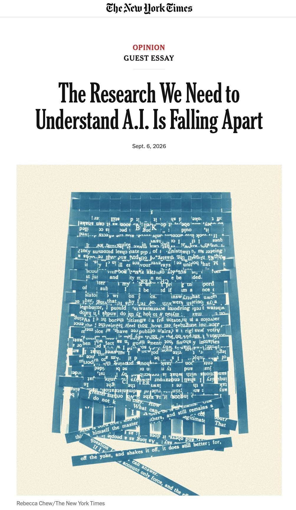
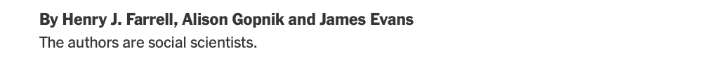
To navigate the shock waves of A.I., we must restore social science research as an enterprise that starts from the public interest.
Connaissance et représentation
dans la pensée contemporaine
Connaissance et représentation
dans la pensée moderne: I. Kant
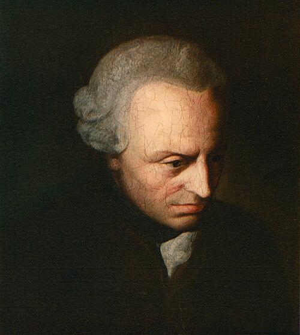
Notre connaissance procède de deux sources fondamentales de l’esprit, dont la première est le pouvoir de recevoir les représentations (la réceptivité des impressions), la seconde le pouvoir de connaître par l’intermédiaire de ces représentations un objet (spontanéité des concepts) ; par la première nous est donné un objet, par la seconde celui-ci est pensé en relation avec cette représentation (comme simple détermination de l’esprit). Intuition et concepts constituent donc les éléments de toute notre connaissance, si bien que ni des concepts, sans une intuition leur correspondant de quelque manière, ni une intuition sans concepts ne peuvent fournir une connaissance.
Connaissance et représentation
dans la pensée moderne: I. Kant
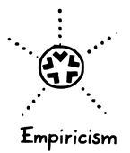
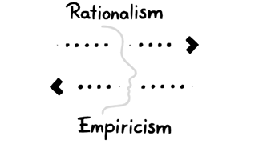
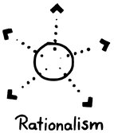
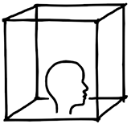
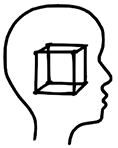
(crédits images: Ammer 2023)
Kant: Théorie des jugements
| S est P | A priori | A posteriori |
|---|---|---|
| Analytique | Tautologies | [Impossible] |
| Synthétique | ? | Jugements empiriques |
Conséquences de la critique kantienne
- Les choses en soi ne peuvent jamais être connues
- On ne peut connaître que des phénomènes (des apparences)
- Le sujet transcendental (c-à-d “connaissant”) ne peut jamais être connu
- On ne peut connaître que des sujets empiriques
Connaissance et représentation
dans la pensée contemporaine: F. Nietzsche

“Dans quelque coin reculé de l’univers ruisselant du scintillement d’innombrables systèmes solaires, il y eut un jour un astre sur lequel des animaux intelligents inventèrent le connaître. Ce fut la minute la plus orgueilleuse et la plus menteuse de l’« histoire universelle »…”
Matrice argumentative de la critique contemporaine
La connaissance est inévitablement
conditionnée par le langage
↓
La relation entre le langage et le monde est essentiellement arbitraire
↓
Toute régularité dans le langage et la connaissance
est culturelle/sociale/politique
↓
Nous devons résister aux régularités héritées
et en créer de nouvelles.
Langage et sciences formelles
Syntaxe logique du langage
(1934)
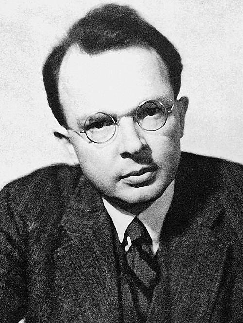
Logique↓
Sémantique
Théorie de l’information
(1948)
↓
Pragmatique
Linguistique générative
(1957)
↓
Syntaxe
Matrice argumentative de la critique contemporaine
La connaissance est inévitablement
conditionnée par le langage
↓
[La relation entre le langage et le monde est essentiellement arbitraire]
↓
Toute régularité dans le langage et la connaissance
est culturelle/sociale/politique
↓
Nous devons résister aux régularités héritées
et en créer de nouvelles.
IA: McCarthy’s “Advice taker”
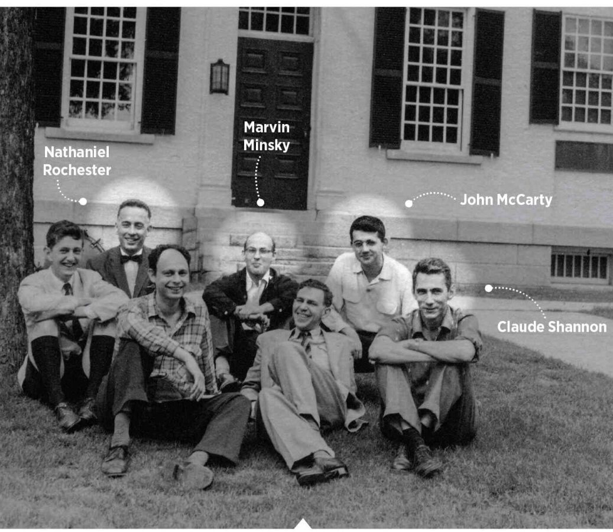
A machine is instructed mainly in the form of a sequence of imperative sentences; while a human is instructed mainly in declarative sentences describing the situation in which action is required together with a few imperatives that say what is wanted.
Whenever we program a computer to learn from experience we build into the program a sort of epistemology. […] I hope that once we have succeeded in making computer programs reason about the world, we will be able to reformulate epistemology as a branch of applied mathematics no more mysterious or controversial than physics.
Borges et la langue analytique de Wilkins
…certaine encyclopédie chinoise intitulée Le marché céleste des connaissances bénévoles. Dans les pages lointaines de ce livre, il est écrit que les animaux se divisent en a) appartenant à l’Empereur, b) embaumés, c) apprivoisés, d) cochons de lait, e) sirènes, f) fabuleux, g) chiens en liberté, h) inclus dans la présente classification, i) qui s’agitent comme des fous, j) innombrables, k) dessinés avec un très fin pinceau de poils de chameau, l) et cætera, m) qui viennent de casser la cruche, n) qui de loin semblent des mouches.
Critique contemporaine: M. Foucault
Quand nous instaurons un classement réfléchi, quand nous disons que le chat et le chien se ressemblent moins que deux lévriers, même s’ils sont l’un et l’autre apprivoisés ou embaumés, même s’ils courent tous deux comme des fous, et même s’ils viennent de casser la cruche, quel est donc le sol à partir de quoi nous pouvons l’établir en toute certitude? Sur quelle « table », selon quel espace d’identités, de similitudes, d’analogies, avons-nous pris l’habitude de distribuer tant de choses différentes et pareilles? Quelle est cette cohérence — dont on voit bien tout de suite qu’elle n’est ni déterminée par un enchaînement a priori et nécessaire, ni imposée par des contenus immédiatement sensibles?
Critique contemporaine: M. Foucault
Peut-être y a-t-il, dans ce tableau de Vélasquez, comme la représentation de la représentation classique, et la définition de l’espace qu’elle ouvre. Elle entreprend en effet de s’y représenter en tous ses éléments, avec ses images, les regards auxquels elle s’offre, les visages qu’elle rend visibles, les gestes qui la font naître. Mais là, dans cette dispersion qu’elle recueille et étale tout ensemble, un vide essentiel est impérieusement indiqué de toutes parts: la disparition nécessaire de ce qui la fonde, — de celui à qui elle ressemble et de celui aux yeux de qui elle n’est que ressemblance. Ce sujet même — qui est le même — a été élidé. Et libre enfin de ce rapport qui l’enchaînait, la représentation peut se donner comme pure représentation.
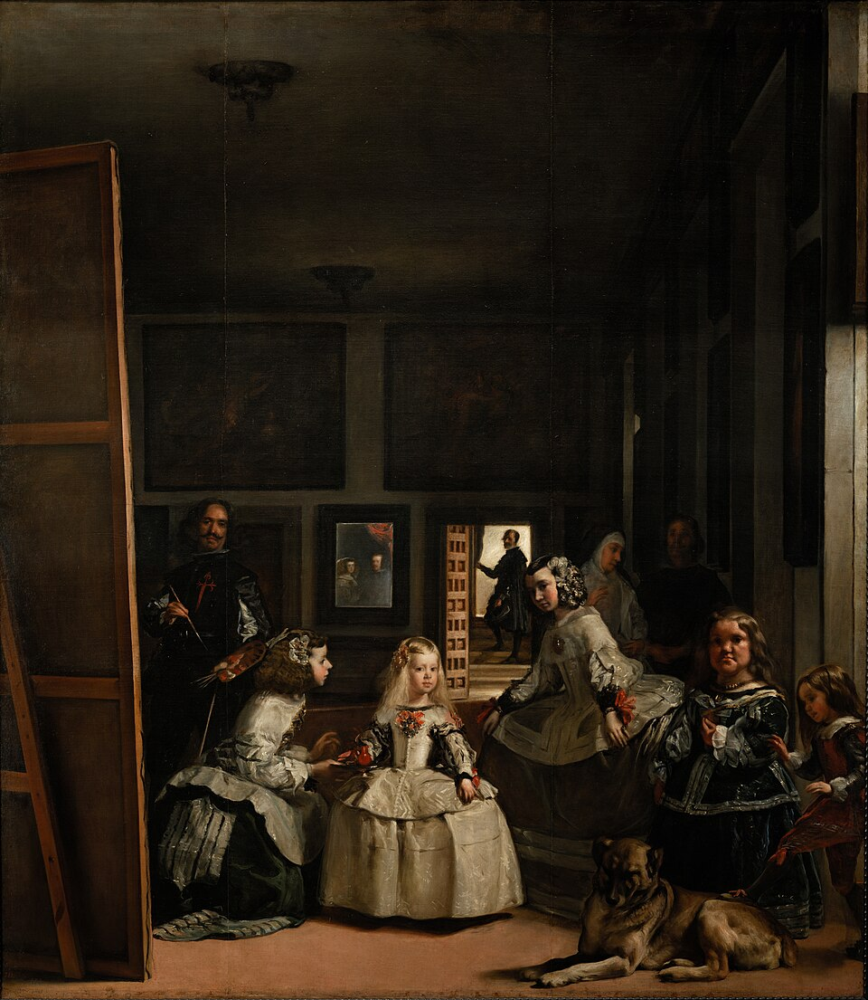
Enjeu actuel: un formalisme critique
Un formalisme sans naturalisation est-il possible?
- Nous devons développer l’étude des systèmes formels pour la représentation et l’inférence qui ne présuppose pas:
- la nature des objets à connaître
- la nature des sujets qui les connaissent
Présentation du cours
Page web du cours
Moodle du cours
Code: l5soreco
Organisation du cours
Communication
- Toute communication doit se faire sur Moodle.
- Les étudiant·es sont responsables de la consultation des messages diffusés sur Moodle.
- Dans des cas strictement nécessaires, vous pouvez contacter l’enseignant à son adresse institutionnelle.
Organisation du cours
Évaluation
La note finale sera établie selon la répartition suivante :
- 50% Contrôle continu
- 50% Examen final
Contrôle continu
- Réponses libres hebdomadaires aux lectures obligatoires
- Premier contrôle: 19/10
- Second contrôle: 07/12
Réponses libres hebdomadaires
- Minimum 8 réponses rendues sur un total de 12
- La forme du retour est entièrement libre
- e.g., des questions sur le contenu du texte, la mention d’aspects difficiles à comprendre, des commentaires positifs ou négatifs, des réflexions, des critiques ou des propositions de pistes de discussion
- N’écrivez pas de résumé du texte
- La longueur de la réponse est variable, mais ne doit pas dépasser 500 mots
Module 1: Propositions, Objets, Graphes
| Séance | Date | Module | Thème | Lectures |
|---|---|---|---|---|
| 2 | 21/09 | M1: Propositions |
Logique propositionnelle |
· Lifschitz et al. (2008) |
| 3 | 28/09 | Logique de premier ordre |
· Lifschitz et al. (2008) · Brachman and Levesque (2004, chap. 2) |
|
| 4 | 05/10 | Logiques de description |
· Brachman and Levesque (2004, chap. 9) · Baader et al. (2008) |
|
| 5 | 12/10 | M1: Objets |
Ontologies | · Guarino et al. (2009) · Pan (2009) · Antoniou and Harmelen (2009) |
| 6 | 19/10 | M1: Graphes |
Graphes de connaissances | · Hogan et al. (2022) · Vrandečić and Krötzsch (2014) |
Module 2: Vecteurs
| Séance | Date | Module | Thème | Lectures |
|---|---|---|---|---|
| 7 | 02/11 | M2: Vecteurs |
Représentations vectorielles | · Turney and Pantel (2010) · Barbut (1967, chap. XI) · Goodfellow et al. (2016, secs. 2.1–8) |
| 8 | 09/11 | Embeddings neuronaux |
· Mikolov et al. (2013) · Levy and Goldberg (2014) |
Module 3: Types
Module 4: Catégories
Références
Gianni Gastaldi | L5SORECO